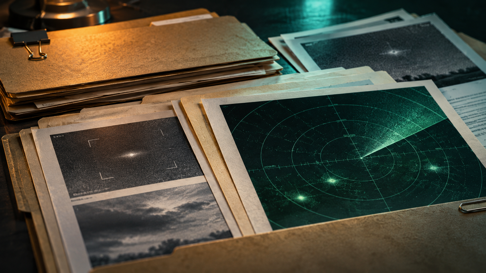

Government records · November 20, 2026
Pentagon Releases 43 More UAP Files: Radar Analysis, AAWSAP Records and Historical Cases

The Department of War's eighth PURSUE release adds 43 files: 40 documents and three videos. Public release inventories identify six CIA files and 37 Department of War files, covering material dated from 1949 through 2026. The cumulative public index is reported to contain 521 records.
What is in Release 08?
The records include six CIA memoranda from 1952, Air Force-era reports and case cards, documents concerning the Defense Intelligence Agency's AAWSAP program and its BAASS contractor, an AARO radar assessment, and three military videos associated with the Middle East.
Two records worth closer examination
DOW-UAP-D165 concerns radar detections in North America in 2023. An unusually high speed estimate depends on interpreting separate detections as one continuous track; the released summary alone does not establish extraordinary flight performance.
DOW-UAP-D172 is a BAASS ten-month contractor report dated July 2009. Its descriptions of investigations and proposed facilities should be distinguished from independently verified outcomes or recovered materials.
What the release does—and does not—establish
Publication confirms that the government has made these records available. It does not validate every witness account, contractor assertion, object identification, or proposed explanation contained in them. The three videos require examination of provenance, sensor metadata, and contextual information before drawing conclusions.
Explore the records: Permanent release record · AARO radar assessment · BAASS / AAWSAP contractor report · Release 07
Primary archive: Department of War PURSUE Release 08. Secondary inventory: Release 08 file register. Government PDFs were not directly inspected in this build; descriptions should be checked against original files before treating individual claims as verified.
Investigative feature
Why Did a Pentagon Contractor Design an Underground Vault to Store UFO Materials? — direct inspection of the vault passages in D171 and D172, November 27, 2026.